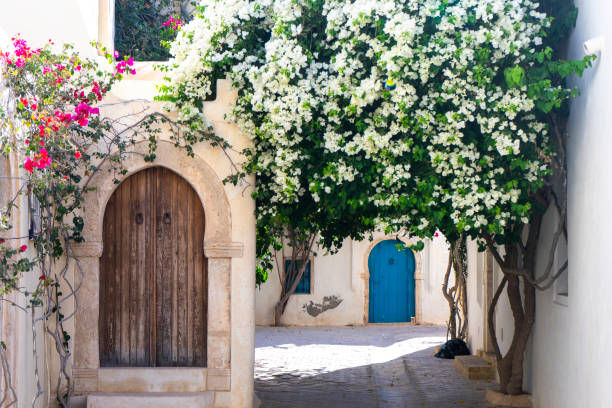
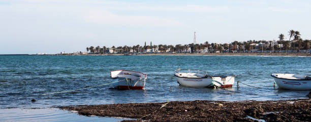
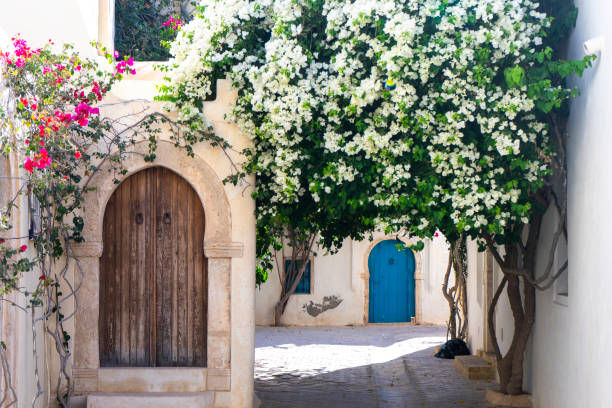
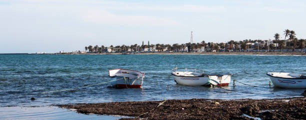
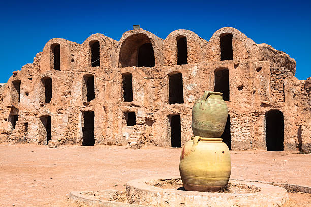
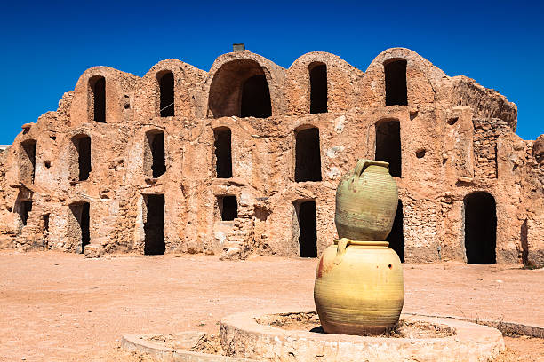

Elle occupe une position centrale dans le sud-est tunisien car se trouvant à 75 kilomètres au sud de Gabès, 78 kilomètres à l'ouest de Ben Gardane et une cinquantaine de kilomètres au nord de Tataouine ; la capitale Tunis se trouve à 482 kilomètres au nord. Le territoire de la ville de Médenine est délimité par le gouvernorat de Gabès, Sidi Makhlouf et la mer Méditerranée au nord, Beni Khedache à l'ouest, Ben Gardane à l'est et le gouvernorat de Tataouine au sud.

On peut y trouver des ksour et des ensembles de greniers à provisions de forme demi-cylindrique appelés ghorfas ; les premiers d'entre eux ont été construits vers le xviie siècle. En 1893, on dénombre 35 ksours et 6 000 ghorfas. Ces ksour de plaine se sont ensuite progressivement transformés en un centre urbain

Des expositions ont eu lieu autour des sites et monuments, l’artisanat, les arts plastiques, le livre et les personnalités célèbres de la région, l’art culinaire local, le tourisme, les plantes aromatiques, les traditions vestimentaires outre les produits agricoles de la région. Zarzis et Djerba étaient bien présents à travers leur patrimoine dont les métiers de la pêche traditionnelle, le tissage, la poterie et tant d’autres composantes identitaires locales.


 




 
